ダンスのレンタルスタジオは、1部屋で月にいくら稼げるのか。
最初に、答えを言います。
ぼくが出してきた11店舗の平均で、月の利益は14.6万円 です。
家賃は平均11.2万円。売上は平均28.3万円。
無人で回るので、ぼくが店に立つことはありません。
運営にかける時間は、1店舗あたり1日数分です。
そして、予約の9割がリピーター。
一度軌道に乗ると、毎月ほぼ同じ売上が、勝手に入ってきます。
「ほんとに?」
そう思いますよね。
なので、11店舗ぜんぶの数字を、このあとすぐ出します。
そのうえで、「で、どうやるの?」 に答えます。
この本は、その出し方の全部です。
0-1. ダンスのレンタルスタジオは、どれだけ稼げるのか
いちばん知りたいことから、答えます。
ぼくがこれまで出してきた、ダンスのレンタルスタジオ11店舗。
その数字を、1店ずつ全部出します。
← 店舗の表は横にスクロールできます →
| 店 | 広さ | 駅徒歩 | 家賃 | 月の売上 | 月の利益 | 備考 |
|---|---|---|---|---|---|---|
| 1号店 | 40㎡ | 5分 | 9.9万円 | 27.4万円 | 14.8万円 | |
| 2号店 | 40㎡ | 5分 | 10.3万円 | 25.1万円 | 12.0万円 | 1号店と同じ建物の3階 |
| 3号店 | 50㎡ | 5分 | 15.95万円 | 43.8万円 | 25.7万円 | ビルの5階 |
| 4号店 | 20㎡ | 3分 | 5.6万円 | 21.5万円 | 13.3万円 | 4〜8号店は、同じビルの1〜5階を一棟まるごと借りた5店舗 |
| 5号店 | 35㎡ | 3分 | 7.4万円 | 24.8万円 | 15.2万円 | 同上 |
| 6号店 | 35㎡ | 3分 | 7.4万円 | 25.8万円 | 16.2万円 | 同上 |
| 7号店 | 35㎡ | 3分 | 7.4万円 | 24.8万円 | 15.2万円 | 同上 |
| 8号店 | 35㎡ | 3分 | 7.4万円 | 22.4万円 | 12.8万円 | 同上 |
| 9号店 | 47㎡ | 2分 | 19.8万円 | 46.4万円 | 23.2万円 | |
| 10号店 | 40㎡ | 5分 | 18.7万円 | 25.5万円 | 3.3万円 | 値付けを1年ほど間違えた。直したあとは月10万円近く |
| 11号店 | 49㎡ | 4分 | 13.0万円 | 23.9万円 | 9.4万円 | 開業6ヶ月なので、6ヶ月の平均 |
| 11店舗の平均 | 11.2万円 | 28.3万円 | 14.6万円 |
売上と利益は、直近12ヶ月の月平均 です(運営中の店は2026年5月までの12ヶ月、撤退した店は最後の12ヶ月)。家賃は、台帳に記録した毎月の支払額。利益は、売上から家賃・Wi-Fi・水道光熱費・広告費を引いた額です(清掃費・消耗品、ぼくの人件費と初期費用は入っていません)。※9号店は、その後の2026年7月までの12ヶ月だと、月の利益は平均24.1万円です(店舗紹介の記事は、こちらの期間で書いています)。
店の番号は、出した順です。
11店舗とも、駅から歩いて5分以内。
11店舗のうち、赤字の店はゼロ です。
いちばん利益が小さい10号店は、値付けを1年ほど間違えていました。
直したあとは、月10万円近くまで戻っています(第8部で全部書きます)。
いま運営している店でいちばん利益が大きい9号店は、直近では月30万円を超える月も出ています。
11店舗のうち、いま運営しているのは5店舗です。
3号店と、一棟まるごと借りていた4〜8号店は、いまはありません。
やめたのは、この2回だけ。
どちらも、最後の月まで利益は出ていました(理由は、このあと書きます)。
1店舗で、月に十数万円。
これが、2店舗、3店舗と積み上がっていきます。
ダンス以外も合わせた、ぼくの全体の数字はこうです。
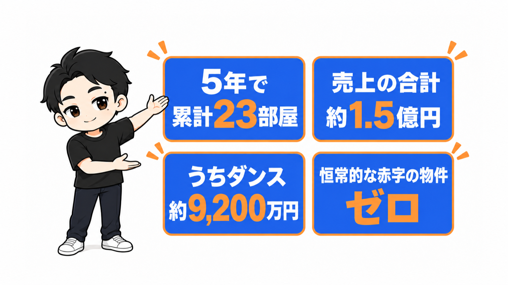
- 2021年3月に1店舗目。5年で 累計23店舗
- 売上の合計は 約1.5億円(お客様支払いベース)。手元に入金された実測では 1億2,789万7,431円(2021年3月〜2026年6月)
- そのうち ダンスのレンタルスタジオだけで8,300万円超(手元に入ったお金の記録で、全体の約65%)
- 直近は 月間粗利200万円超を6ヶ月連続(2025年10月〜2026年3月)。最高は約288万円
- 軌道に乗ったダンススタジオの手残りは、1部屋あたり月10〜20万円
- 23店舗出して、月次で恒常的に赤字だった物件はゼロ
店舗は1部屋を1店舗として数えています(同じ建物に複数の部屋がある店もあります)。
数字だけだと信じにくいと思うので、グラフも出します。
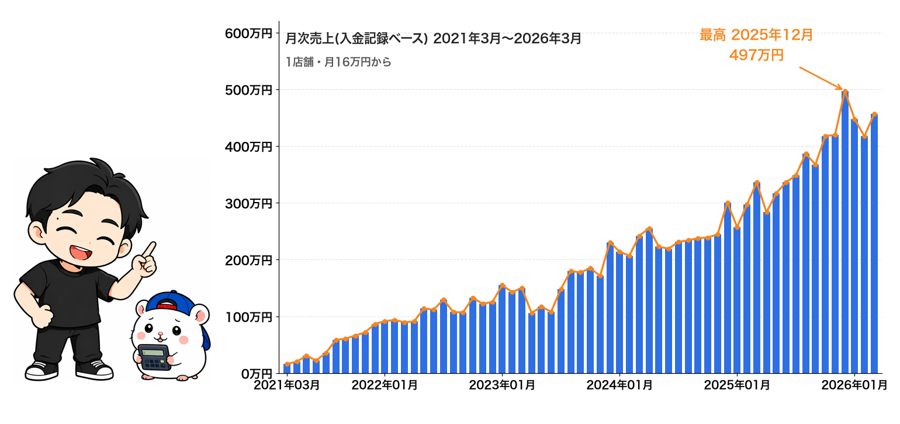
きれいな右肩上がりでは、ありません。
停滞した時期も、閉店で凹んだ月もあります。
それも含めて、全部見せます。
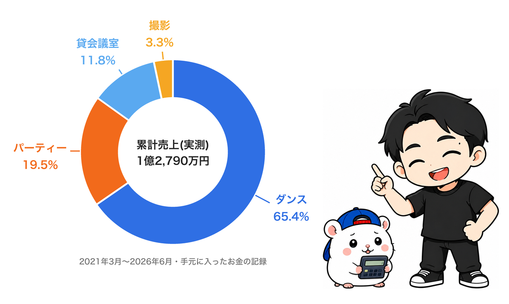
赤字ゼロは腕自慢ではありません。
最大の固定費である家賃を、最初に低く抑える。
すると損益分岐点が下がるので、大負けしにくい。
構造の話です。
ただし、撤退は2回 しています。
1回目は、下の階からの騒音クレーム。
利益が出ていた物件だったので、正直めちゃくちゃ悔しかった。
2ヶ月ほど下の階の方とやり取りしましたが、防音工事をしても苦情は止まらないと判断して、やめました。
もう1つは、再開発によるビルの取り壊し。
こちらは補償金を受け取っての退去でした。
失敗を隠すより、失敗まで見せる教材 のほうが、あなたの役に立つはずです。
この2つの撤退は、第2部と第9部で判断の過程ごと公開します。
0-2. なぜ、ダンスのレンタルスタジオはこんなに安定して稼げるのか
レンタルスペースには、いろいろなジャンルがあります。
貸会議室、パーティースペース、撮影スタジオ、そしてダンススタジオ。
ぼくは4つとも、実際にやりました。
そのうえで断言します。
いま新しく1部屋出すなら、ダンスのレンタルスタジオ一択です。
理由は4つ。
理由①: 予約の9割がリピーター
ダンススタジオは、同じ人が何度も来ます。
毎週火曜の19時に、同じ教室。
毎週土曜の午前に、同じチーム。
いま運営している5店舗で実測すると、予約の91%がリピーター でした。
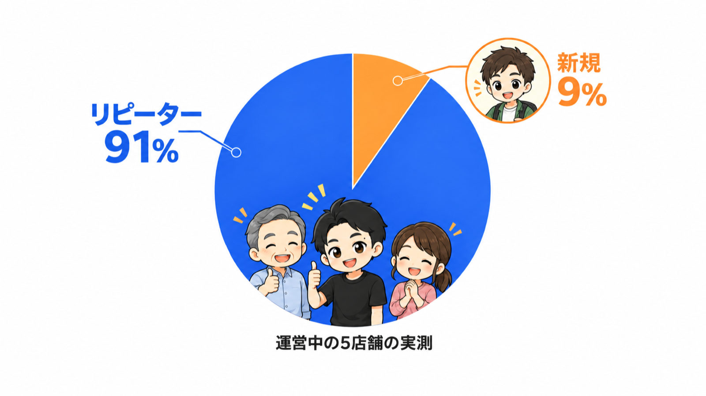
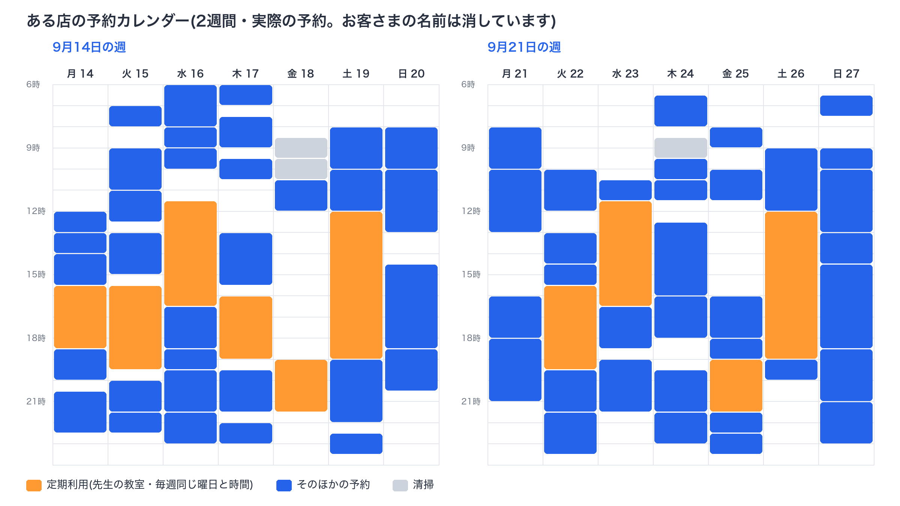
一度使ってもらえれば、翌月も、その次の月も、予約が先に埋まります。
これは撮影スタジオやパーティースペースには、ない感覚です。
理由②: 内装は「鏡だけ」
ダンススタジオの内装は、シンプルです。
鏡を貼る。
以上。
床も、音響も、備品も、お金をかけなくていい。
Amazonや楽天ですべて揃います。
撮影スタジオのように壁紙や小物を作り込む必要も、パーティースペースのようにソファやプロジェクターをそろえる必要もありません。
しかも、鏡を貼っただけの部屋を、ダンス以外の人も使ってくれます。
ぼくの店の予約を用途ごとに数えると、7割がダンス。 残りの3割は、ヨガ・トレーニング・お芝居・楽器・撮影など でした。
| 予約の用途 | 割合 |
|---|---|
| ダンス | 70.3% |
| トレーニング・フィットネス | 4.5% |
| ヨガ・ピラティス | 4.0% |
| 演劇・けいこ | 3.5% |
| 音楽・歌 | 3.1% |
| 格闘技・武道 | 2.7% |
| 撮影・配信 | 2.0% |
| そのほか(講座・会議・未記入など) | 9.7% |
鏡のある広い部屋がほしい人は、ダンサーだけではないんです。
理由③: 物件が「見つからない」から、真似されない
変な言い方ですが、これが本質です。
ダンススタジオは、大音量で音楽を鳴らして、ドタドタ踊る場所。
大家さんからしたら、正直イヤですよね。
だから、そもそも出店できる物件がほとんど市場にありません。
出せたとしても、その物件で利益が出るかは別の話。
つまり、物件の希少さがそのまま参入障壁 になっています。
撮影スタジオは、流行ると一気に真似されました。
ダンススタジオは、真似したくても物件が見つからない。
一度出せてしまえば、崩れにくいんです。
「え、じゃあ自分も出せないじゃん」
そう思いましたよね。
ここが、この本のいちばん大事なところです。
物件は「ない」のではなく、「ふつうに探すと見つからない」だけ なんです。
ぼくはこの5年で、ダンススタジオを累計11店舗出してきました。
見つからないはずの物件を、11回見つけています。
運ではありません。
探し方に、型があります。
- どの駅で探すか
- どんな条件で探すか
- 出てきた物件のどれが「儲かる物件」か
- どうやって問い合わせるか
この型を、ツール にしました。
ぼくが毎日使っている「物件探しツール for ダンス」です。
たくさんの物件の中から、儲かる物件だけを、ツールが拾い上げてくれます。
例えば、ぼくが先日、4つの県で物件を探したとき。
集まった物件は、616件。
これを1件ずつ目で見ていたら、何日もかかります。
ツールに採点させたら、問い合わせる価値のある物件は 18件 にしぼられました。
かかった時間は、約70秒 です。
1件ずつ見るときは、こんな画面になります。
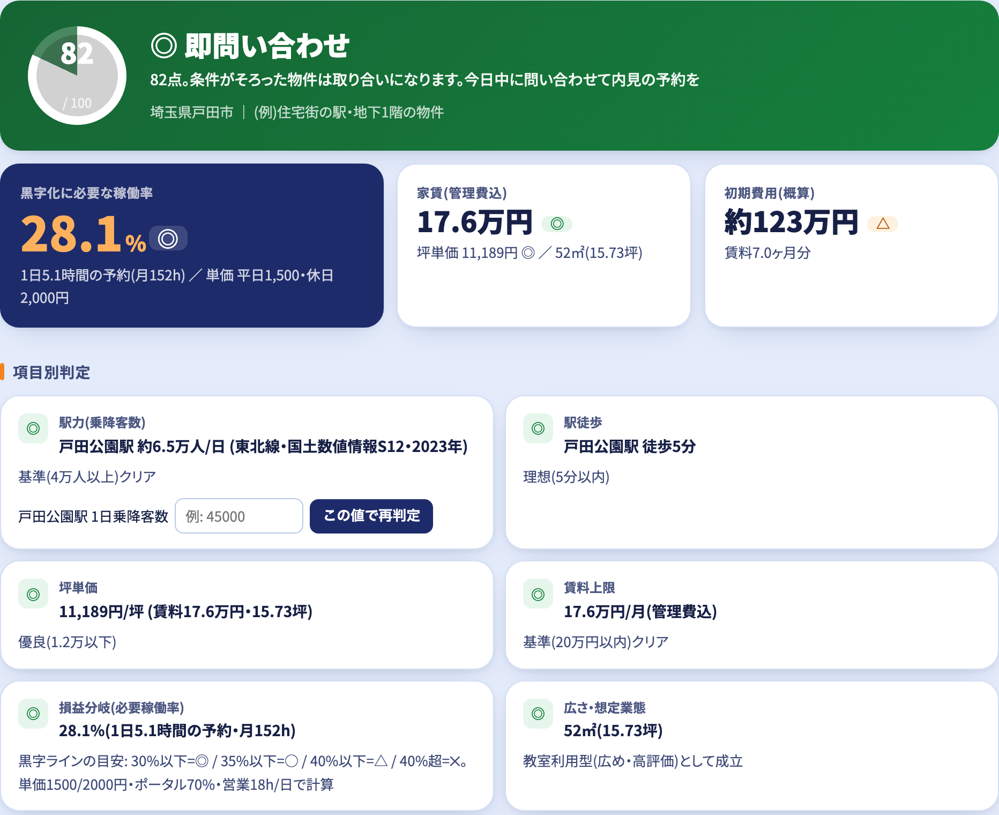
点数は82点。「◎ 即問い合わせ」。
黒字に必要な時間は、1日5.1時間。
家賃、駅の力、広さ、階。
ぼくが物件を見るときに頭の中でやっていた計算を、そのまま画面にしました。
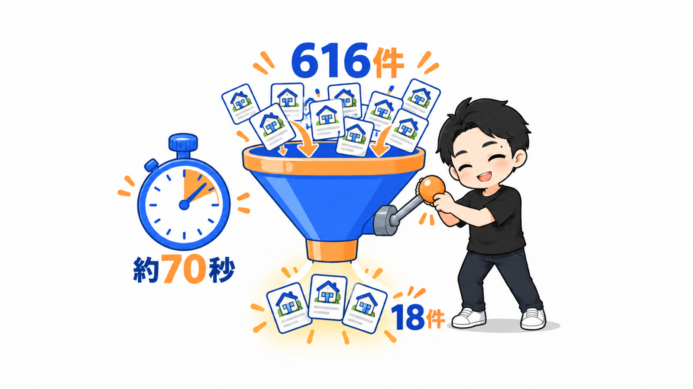
毎朝、不動産サイトを目で追う必要は、もうありません。
この探し方の型とツールを、この本にまるごと付けます。
みんなは見つけられない。
あなたは見つけられる。
だから、参入障壁が「あなたの味方」になります。
理由④: ぼくの売上の主戦場だから
数字がいちばん正直です。
手元に入ったお金の記録で見ると、うちの累計売上の 約65%(8,300万円超)は、ダンスのレンタルスタジオ が稼いでいます。
4ジャンルやってきた中で、圧倒的です。
単価は正直、そんなに取れません。
それでも稼働率と予約の数が、他のジャンルとはレベルが違います。
「資産として積み上がっていく」感覚に、いちばん近いジャンル です。
0-3. しかも、手間がかからない — レンタルスペースが副業に向いている理由
ぼくは製薬会社の営業をしながら、副業でレンタルスペースを始めました。
5年で、累計23店舗。
会社は辞めて、いまは法人でやっています。
なぜレンタルスペースだったのか。
理由は、売上と労働が切り離されている からです。
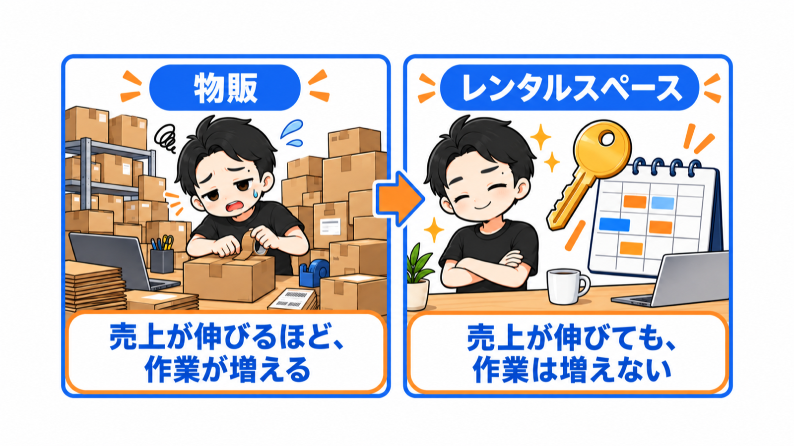
たとえば、物販は、売れれば売れるほど、仕入れて、検品して、梱包して、発送します。
ぼくはeBay輸出で月の利益が200万円まで行きましたが、昼休みに返品対応をしていました。
あれは副業ではなく、2つ目の仕事 でした。
レンタルスペースは、ちがいます。
予約が入っても、あなたは何もしません。
お客さんが自分で鍵を開けて、使って、帰ります。
掃除は外注できます。
1店舗あたり1日0分〜数分の労力。
だから、会社員のまま始められます。
そしてもうひとつ。
レンタルスペースは、AIに食われません。
流行っている副業は、動画編集、LINEスタンプ、ライティング。
ぜんぶAIと相性がいい。
相性がいいということは、誰でも真似できるということです。
レンタルスペースは、物件を探して、大家さんと交渉して、鏡を貼って、鍵を管理する。
面倒くさい。
でも、その面倒くささが参入障壁になります。
AIは物件を契約してくれません。
設営もしてくれません。
売上は毎月積み上がる。
1店舗で月10万円。
これを3店舗、5店舗と増やしていくと、給料を超えます。
ぼくはそうやって、脱サラしました。
0-4. ぼくは何者か
書いている人間のことを、短く。
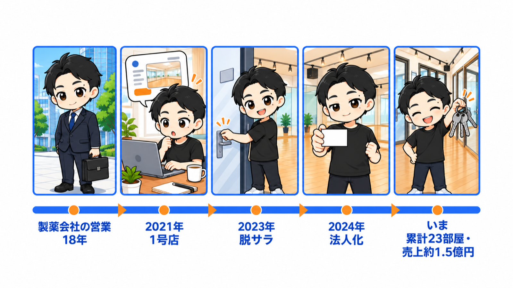
もともと製薬会社の営業で、18年。
「40歳までに独立する」と決めて、副業を始めました。
2021年、37歳。
不動産サイトからノリで問い合わせた最初の物件が、そのまま1号店になりました。
初期投資約90万円を7ヶ月で回収して、5年たった今も毎月15万円ほどの利益を出し続けています。
正直、運がよかっただけです。
だから、その運を言語化して、再現できる形にしました。
それがこの本です。
2023年に脱サラ。
2024年に法人化。
いま、累計23店舗・売上約1.5億円。
そして、いまも毎日、物件を探しています。
全国9,287地点の駅データを「住宅地かどうか」「人が乗り降りするか」で採点するツールを自作して、毎朝回しています。
この本の付録に、そのツールをそのまま付けます。
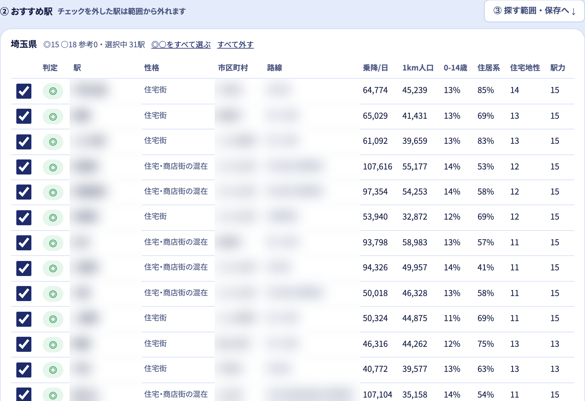
もう1冊、『レンタルスペース経営の教科書』という本も書いています。
あちらは4ジャンルの総論。
こちらは、ダンス1本に絞った実録 です。
0-5. で、どうやるの? — 誰も教えてくれない成功の秘訣を、種明かしします
ここからが、この本のいちばん大事なところです。
きくりん式。
先に結論から。
ダンスのレンタルスタジオで稼ぎたいなら、繁華街の駅に出してはいけません。
新宿や渋谷のような繁華街の駅でも、オフィス街の駅でもなく、住宅地の駅 に出します。
昼間の人口が「減る」ような住宅地の駅がベストです。
人通りが多い繁華街がいいんじゃないの?
そう思いますよね。
順番に説明します。
ダンスのレンタルスタジオを、どの駅に出すか。
駅から近いこと。これは大前提です。
教室の生徒さんもリピーターさんも、駅からの距離には敏感なので、徒歩7分以内を基準にしています。
じゃあ、どの駅か。
ふつうは、こう考えます。
「人が集まる駅がいい。新宿とか渋谷とか。乗降客が多いほどいい」
大手のレンタルスタジオは、実際にそうしています。
繁華街の駅前に、何十室も出して、1時間の値段を安くして、だれでもいつでも借りられるようにする。
繁華街の駅 × 低単価 × フリー利用。
ぼくは、その逆をやっています。
住宅地の駅 × 教室利用 × 定期。
駅は、繁華街・商業地・オフィス街・学生街・住宅地と、性格が分かれます。
そのうち、住宅地の性格をもつ駅の、駅近 に出します。
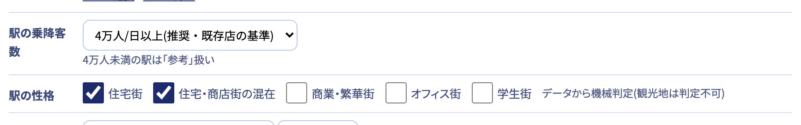
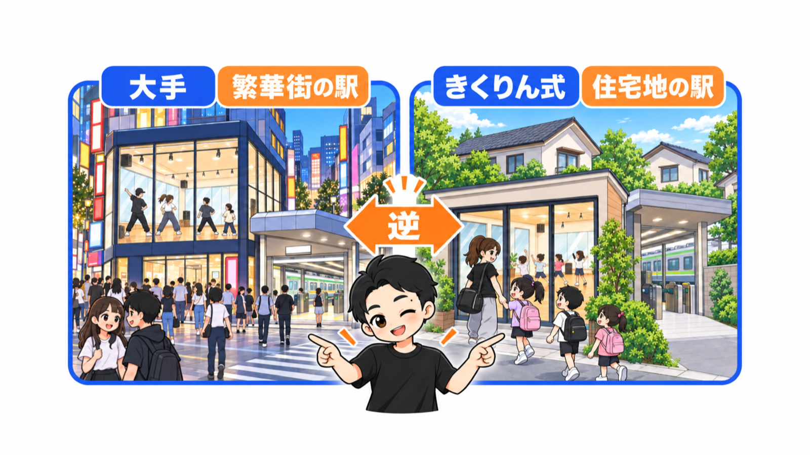
ダンススタジオの勝負は「平日の昼間」です
ダンススタジオの予約って、平日の夕方以降と土日は、わりと入るんです。
学校帰りのキッズダンス。
仕事帰りの大人の教室。
土日のチーム練習。
ここは、単価さえ間違えなければ入ります。
差がつくのは、平日の昼間。
ここを埋められるかどうかで、スタジオの売上が決まります。
じゃあ、平日の昼間にダンススタジオを使うのは、誰か。
主婦の方が中心です。
ヨガ、フラダンス、大人のバレエ、子どもを預けている間の個人練。
実際に、うちの店のヨガとピラティスの予約は、9割が17時までにはじまります。
じゃあ、主婦の方はどこに住んでいるか。
住宅地です。
オフィス街には、いません。
学生街にも、いません。
昼間の人口が多い駅は、働く人と学生の駅。
昼間の人口が「減る」駅が、主婦の方が暮らしている駅なんです。
だから、昼間人口が少なくなる住宅地の駅に出す。
一見、昼間に人がいなくて不安に見える。
でも、ダンススタジオにとっては、そこが正解です。
先生の立場で考えてみてください
もうひとつ、視点を変えます。
あなたがヨガの先生だとして、平日の昼間に教室を開くとします。
どこに出しますか。
渋谷で高い家賃を払って、生徒を呼びますか。
それとも、見込み客がたくさん住んでいる住宅街の駅で、開きますか。
後者ですよね。
先生は、お客さんの家の近くで手軽に来てほしい。
だから、スタジオもそこにあるべきなんです。
住宅地の駅に出すと、いいことが3つ
① 家賃が安い。
うちの家賃の基準に入る物件は、繁華街の駅前にはほぼありません。
（基準はあとで詳細を解説します。）
住宅街の駅なら、駅近でも基準内の物件はふつうにあります。
家賃が安いと、たとえ稼働率が低くても黒字になります。
② 競合が少ない。
大手は、繁華街の駅にしか出しません。
住宅地の駅にあるのは、だいたいこの2つです。
- ダンス教室が、自分たちのために作ったスタジオ(貸し出していないか、貸していても値段が高い)
- 個人が小さくやっているレンタルスタジオ
うちの店の近くにも、競合は1店舗くらいはあります。
ゼロではありません。
でも、何十室もある大手と値下げ競争をするのとは、まったく別の世界です。
「先生がレッスンで使える、ちゃんとした鏡のある部屋」を、ふつうの値段で貸す。
それだけで、先生が見つけてくれます。
③ 先生が毎週来てくれる。
これが、次の節の話です。
住宅地の駅 × 教室利用 × 定期。
この3つがそろうと、スタジオは勝手に埋まります。
0-6. 「毎週来てくれる人」がいる店は、強い
きくりん式の最後のピースが、定期利用 です。
定期利用というのは、「毎週火曜の10時から2時間」のように、同じ曜日・同じ時間をずっと使ってもらう 契約のこと。
ダンスやヨガの先生が、教室として使ってくれます。
これが、なぜ強いのか。
売上が、積み上がっていくから です。
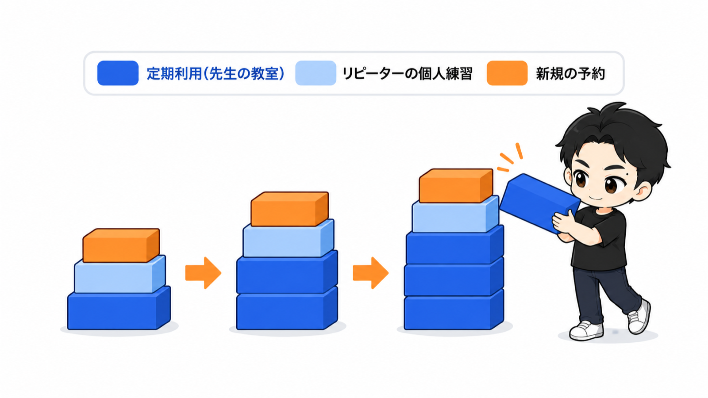
ふつうの商売は、毎月、新しいお客さんを集めつづけないといけません。
今月来た人が、来月も来るとはかぎらない。
毎月、ゼロからのスタートです。
ダンスのレンタルスタジオは、ちがいます。
一度使ってくれた先生は、来週も、来月も、来年も来てくれます。
教室をやめないかぎり、ずっとです。
これが 土台 になります。
そこに、2人目の先生が入る。
3人目の先生が入る。
生徒さんが、個人練習でも通ってくれるようになる。
土台の上に、土台が重なっていく。
新しいお客さんを追いかけなくても、店が勝手に育っていくんです。
例えば、うちでいちばん強い9号店。
住宅地の駅にあります。
この店には、先生の定期利用が何本も入っています。
夕方の時間帯は、いつも9割近く が埋まっています。
もうひとつ、例を。
別の店で、先生の定期利用が1本から4本にふえたとき。
先まで入っている予約が、2倍以上 になりました。
土台が3本ふえただけで、店の景色が変わります。
そして、0-2で出した数字。
予約の9割がリピーター。
これは偶然ではありません。
住宅地の駅に出す。
先生に、教室として使ってもらう。
生徒さんも、個人練習で通ってくれるようになる。
だから、同じ人が何度も来る店になります。
「毎週来てくれる人」をどう作るかが、ダンスのレンタルスタジオのすべてです。
この本の第7部は、まるごとその作り方です。
0-7. この本でわかることと、買わないでほしい人
ここまでが、きくりん式の「方向」と「証拠」です。
ここから先の有料部分は、「判断の基準」と「具体的なやり方」 です。
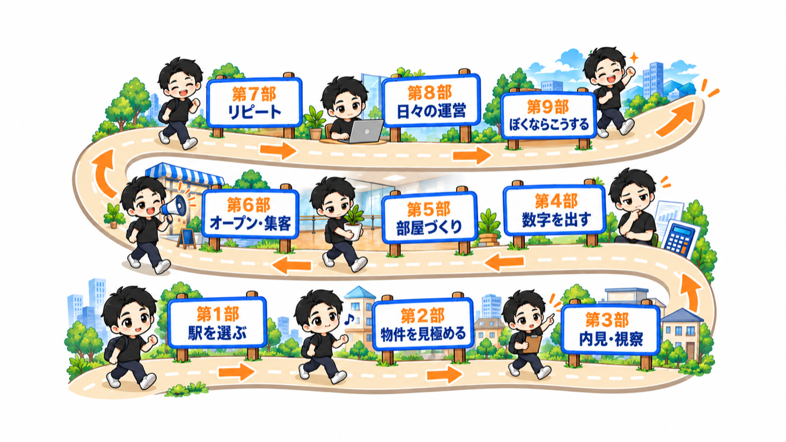
- 第1部 駅の選び方: 全国9,287地点の駅データを点数にした、駅選びの基準。おすすめ駅の全国一覧つき
- 第2部 物件の選び方: 100点満点の配点と、絶対に出してはいけない物件の条件。判定ツールの使い方
- 第3部 内見・視察: 内見で見ること。音の出し方。近くの店の調べ方と、お客さんとして使ってみる視察
- 第4部 シミュレーション: 黒字にするには、1日に何時間埋まればいいか。その式と、初期費用・回収のシミュレーター
- 第5部 設営: 鏡だけ妥協しない。鏡の業者の探し方と、備品の買い物リスト
- 第6部 オープン・集客: 写真、案内の掲示、予約サイトへの登録、公式サイトと予約システム、Google広告
- 第7部 リピート戦略: 定期利用の受けつけ方、先生への声のかけ方、公式サイトで予約してもらう理由の作り方
- 第8部 日々の運営: 清掃、お客さまへの対応、外注、値段の調整と競合のチェック
- 第9部 ぼくならこうする: いま1部屋出すなら。撤退の判断。2店舗目
ぼくの累計11店舗の実録と、毎日使っているツールを、全部入れました。
失敗を、100点満点の配点と4つの指標にした本です。
この本のボリューム
- 第0部〜第9部の全10部+巻末・約6.7万字
- 図解 19枚・画面のスクショとグラフ 36枚
- 付録 10点(Webツール2つ・全国おすすめ駅一覧・テンプレ5点・公式サイトを作るスキル・この本をAIに読みこませるファイル)
- 読み終えるまでの目安: 約2時間
付いてくるツール
- 物件探しツール for ダンス(黒字に必要な時間のシミュレーター・使い方の動画3本つき): 住宅地の駅えらびから、物件集め、◎○△✕の判定、まとめての問い合わせまでを、1つの画面でやります。ぼくが毎日使っている物件探しを、そのままツールにしました。
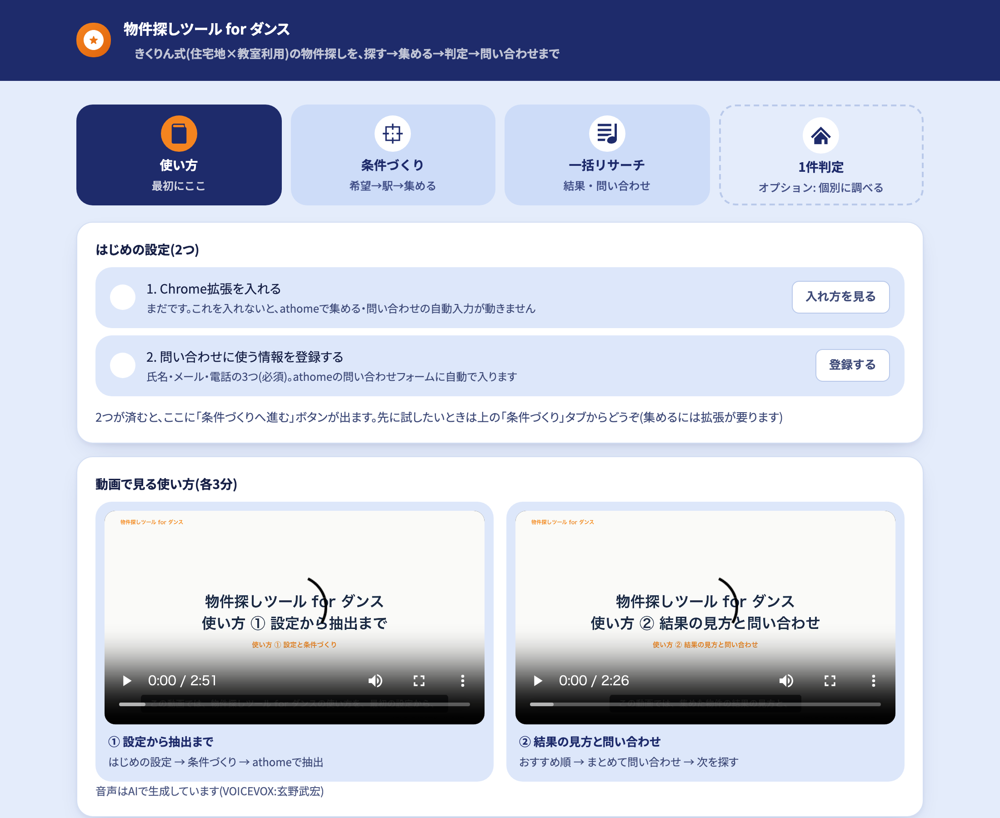
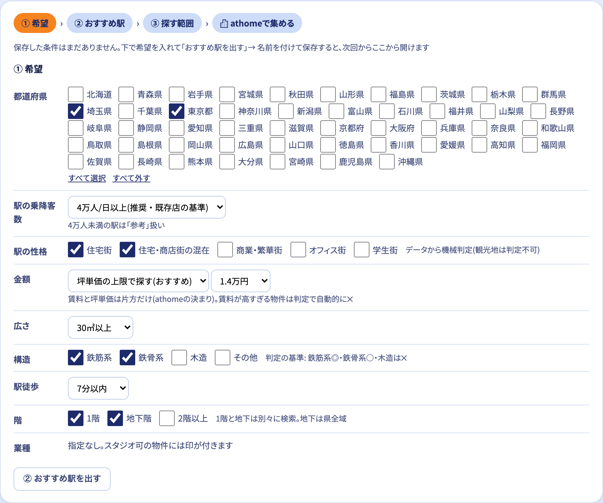
- 初期費用・回収シミュレーター(買い物リストつき): 家賃と広さを入れると、最初にかかるお金と、何ヶ月で取りもどせるかが出ます。開店までに買うものの一覧も、この中にあります。
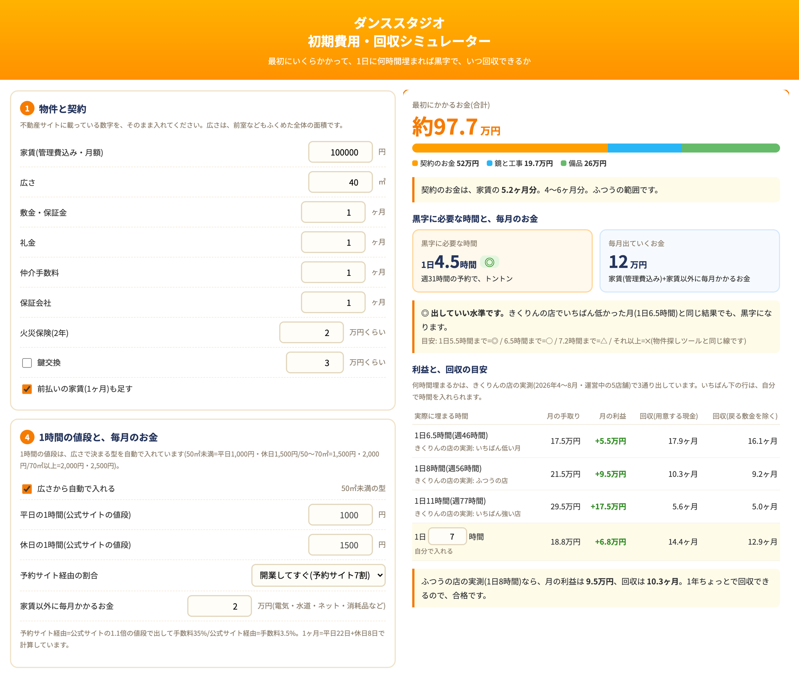
- 全国おすすめ駅一覧: きくりん式の点数で選んだ全国266駅を、都道府県ごとに点数つきでまとめました。まずは自分の住んでいる県から見てください。
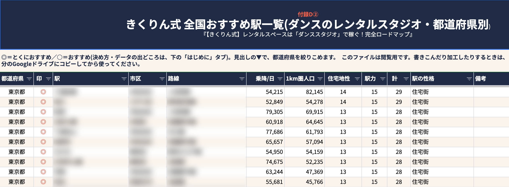
- 公式サイトを作るスキル(作成例6店つき): AIに入れて質問に答えていくと、予約ボタンつきの公式サイトが一式できます。
- そのほかのテンプレ(問い合わせ文・内見チェック・掲示物・営業文面・定期利用フォーム): ぼくが実際に送っている文面と、店に貼っている掲示物です。自分の店用に直して、そのまま使えます。
- この本をAIに読みこませるファイル: 本の全文をAIに読ませて、自分の駅や物件のことを相談できます。
こういう人は、買わないでください
① 自分が教えるスクールを開きたい人。
この本は「貸す」本です。教えません。
② 防音工事をして、音楽スタジオにしたい人。
ぼくは防音工事をしません。工事なしで成立する物件だけを選びます。
③ 繁華街の駅で、大手と価格勝負をしたい人。
きくりん式は、その逆です。
逆に、こういう人には向いています。
- レンタルスペースに興味があって、どのジャンルにするか迷っている人
- ダンススタジオを出したいけれど、物件がまったく見つからない人
- ダンスの先生で、自分の教室と貸し出しを両立したい人
0-8. 免責と、動作環境と、値上げの予告
- この本の数字は、ぼくの店舗の実測です。あなたの店舗で同じ数字になることを保証するものではありません
- 判定ツールは、ふつうのWebページです。ChromeとGoogleアカウントがあれば動きます。この判定ツールにAIの契約は要りません。公式サイト作成の付録は、別途Claude CodeかCodexの契約が必要です
- 物件情報サイトの利用規約を守ってください。ツールは1日1〜2回、間隔をあけて動く設計にしています
- 価格は、3部売れるごとに3,000円ずつ上がります。いまの価格が、いちばん安い価格です
では、第1部から。
駅を、点数で選びます。